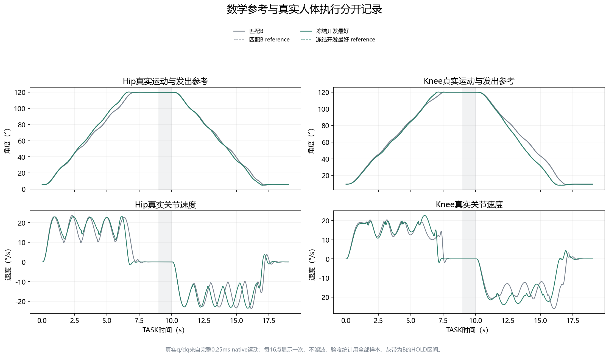
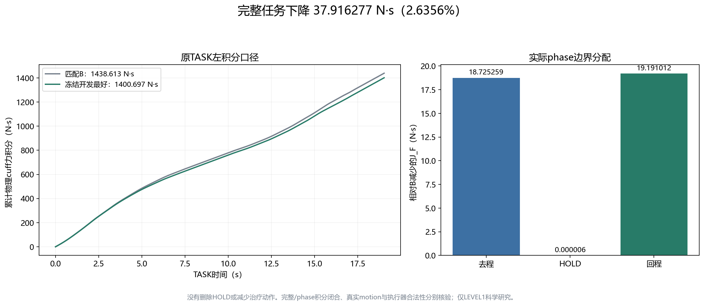
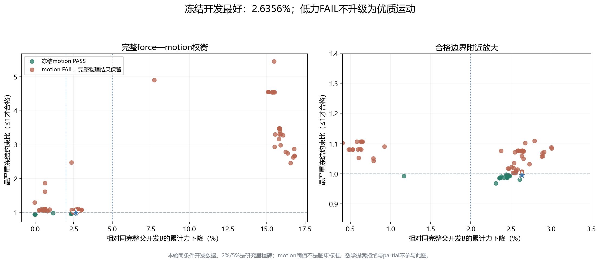
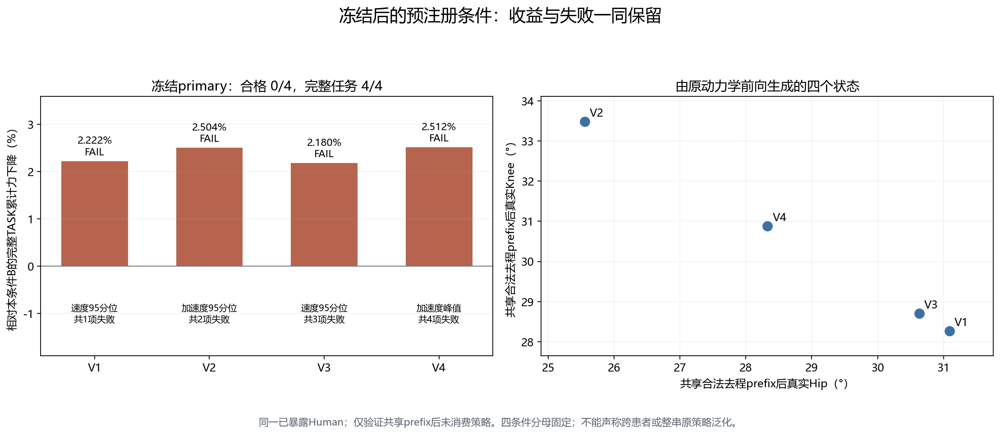

当前结构：从任务输入到六轴机器人力矩
当前 B 采用 Human-waypoint MPC：高层依据估计的人体状态选择下一对髋膝路点，底层持续修正跟踪误差，将人体空间需求转换成 cuff wrench 和机器人六轴力矩。
输入起点、去程目标、返回目标、ROM、速度/加速度约束及完成条件；OUTBOUND → HOLD → RETURN 状态机给出本轮 phase goal。
约束与剩余时间
机器人关节角/速度提供 cuff 的位姿和 twist，F/T 提供 cuff force/moment。接口观测器利用 Kelvin–Voigt 弹簧阻尼关系与上一时刻估计，反解 cuff 相对形变和旋转，再用 commissioned geometry 重建髋膝角度与速度。
dq̂hip, dq̂knee]
控制有效模型
从当前 q̂ 生成二维 Δq 候选；每个目标先生成可执行的 quintic 段，再检查运动、几何与所需 wrench。对可行候选计算目标误差、动作变化与未完成惩罚，选择本轮路点。
下一段 duration
从当前已发出的 qref / dqref 接到新路点，生成 qref(t)、dqref(t)、ddqref(t)。准入检查 source age、model/reference 版本、phase、clearance 和接续条件；governor、bridge 与 fallback 处理迟到或不可接入计划。
当前参考样本
以参考角度/速度与观测状态之差计算所需人体加速度，再用已辨识有效模型计算 generalized torque。cuff allocator 在保持该人体力矩的条件下分配 force/moment；机器人 cuff 位姿与即时速度反馈进一步修正执行误差。
六轴 torque command
安全筛选后的六轴力矩施加到原 CR12 模型，原 spring-damper cuff 产生实际交互作用，完整动力学产生真实运动；下一次 robot/cuff 测量回到观测层。
实际 force / moment
MPC 里面具体求什么？
决策变量与候选空间
决策为下一对髋膝增量 Δq；目标 qtarget = q̂ + Δq。普通 B 使用 2 个步长尺度 × 5 个协调方向，通常最多10个去重候选；每步最大增量为对应完整任务角跨度的20%，接近目标时裁剪，HOLD/终末阶段候选数减少。
采用单路点滚动搜索：任务开始、phase 变化或上一段完成并稳定时重新规划。预测/检查覆盖下一条 quintic 段，时长由约束决定；不是每5 ms重新规划整条任务。
代价函数与约束
+ 0.02 ‖(Δq − Δqprevious) / span‖²
+ 0.25 · I(phase 未完成) + V
先筛选 reference ROM、速度/加速度、连续床面 clearance、剩余时间和有效模型所需 force/moment，再对可行候选排序。Baseline 的 V=0；学习路线可在合法范围内提供剩余计划价值。
当前基础代价鼓励到达目标与动作稳定；直接累计降力由额外协调研究/价值排序探索，不把默认 B 代价写成已经直接最小化整段 J_F。
| 方法层 | 实际求解方式 | 求解内容 |
|---|---|---|
| Waypoint MPC | Python / NumPy 有限候选枚举 + 可行性筛选 + 按代价排序 | 滚动选择下一对 qtarget / dqtarget。B 的基本搜索保留；18D 研究在该原生决策处添加受界共同/差分进度与通过速度调整，再走原筛选链。 |
| Quintic scheduler | NumPy linalg.solve 求3×3线性方程；duration 按参考时间网格搜索 | 由起终 q/dq 和零端点加速度求五次多项式系数；检查连续运动与几何，mechanics 不可行时在剩余时窗内尝试延长 duration。 |
| Cuff allocator | 带等式约束的二次分配，使用线性代数求解 | 保持人体 generalized torque，最小化合力与等效袖套表面 effort 的加权组合；再正确变换到 robot cuff 参考点。 |
控制在中间怎样调整？
人体空间跟踪与模型
τhuman = ID_effective(q̂, dq̂, a_requested)
Commissioning 探测数据建立有效几何、动力学参数和状态残差模型；本页冻结示范使用 commissioned model 执行。持续更新观测状态与控制误差；模型是否继续在线更新由具体研究 arm 控制。
机器人空间执行反馈
分配出的 wrench 加上 cuff 位姿/姿态误差与即时 twist 误差反馈，经机器人 Jacobian 转成关节力矩，并合并 bias/posture 项，再通过既有安全层和 torque limit 执行。低层反馈每5 ms更新；人体实际 q/dq 与交互力变化来自闭环物理执行。
评价端另外记录真实 Human q/dq、force/moment、clearance 与 command receipts，用于检验运动与执行归属。
现在每次规划需要多少秒？
下面直接重算本页两个保存示范的 TASK 规划 worker 计算记录。计时包含高层规划调用中的候选、scheduler 与检查工作；不是仅3×3线性方程的求解时间，也不是测量到力矩生效的总延迟。
| 示范条件 | 记录调用数 | 平均计算耗时 | P95 | 最大值 |
|---|---|---|---|---|
| Baseline B | 14 | 30.731 ms 0.030731 s | 49.173 ms | 57.026 ms |
| 18D development best | 14 | 32.053 ms 0.032053 s | 48.743 ms | 51.599 ms |
规划为事件驱动，5 ms 是持续执行周期。上述耗时为保存的科学仿真运行记录，本轮未重新 benchmark；不代表 host-clock 或硬件实时资格。详细数据与源码依据见 方法与耗时核对记录。
从“跟踪既定轨迹”到“在线决定下一段”
固定参考能回答怎样跟踪，却不能直接回答怎样协调髋膝运动更省力。Stage 5 首先尝试 Goal-directed Torque MPC，再转向在线 Human waypoint。
外部固定整条运动
给定 q_ref / dq_ref / ddq_ref，底层估计和控制负责执行。这里只作为上一轮工作的衔接。
Goal-directed Torque MPC
面向 phase 目标选择 generalized action。Human-only 预测与 robot/interface 真实执行不一致；HOLD、RETURN 和完整 motion 合同暴露问题。
Online Hip/Knee Waypoint
从当前估计状态选择下一对关节目标；scheduler 生成可接入的一段运动，再由机器人通过袖套执行。
在线 Human waypoint 数据流
让运动收益有可核验的执行含义
估计 → 规划 → 准入
Commissioning 建立控制有效几何与动力学 belief；planner 选择 waypoint；scheduler/governor 生成 quintic；计算结束后在当前估计状态重新检查版本、phase、ROM、motion、clearance 和接续。
knee-to-cuff lever 可辨识不代表 shank length 与 cuff fraction 分别已知；commissioning_only 也不代表已实现重复间个体化。
40 ms bridge / 100 ms lifecycle
source age 从原测量开始计，不因返回或重试刷新。40 ms bridge 提供预先验证的短接续/停止通路；100 ms 限制 proposal 年龄。迟到或拒绝后进入合法 carry/stop 与 SAFE_FALLBACK_HOLD，再用新状态规划。
5 ms FAST 服务与 0.25 ms native physics 是不同时间尺度；strict55 是另一个历史 qualification 门槛。
先确认有值得学的动作，再讨论怎样学习
| 路线 | 关键经验 | 结论边界 |
|---|---|---|
| Direct RL / SAC | scratch SAC 300k 未取得完整 phase 任务；DAgger 学生曾完成，SAC fine-tuning 又丢失能力。 | 任务能力和安全接口仍是前提。anchored SAC 约14.486%改善主要减少过长 HOLD，不能与本页同时间协调收益排名。 |
| E / offline teacher | 搜索可执行的协调运动，判断动作空间中是否存在收益。 | 有限预算 best-known；不是全局最优或成熟个体化。 |
| M2 / Linear Q | 在 B 合法 remaining-plan 选择处排序；旧同 Human 条件约6%–9% force 收益。 | 固定候选池中 Q(s,p)=a(s)+b(p)，两 plan 比较时 a(s) 相消。mask/carry 改变不等于学会状态条件排序。 |
| Neural Q | 32×32 网络可表达 state×plan；两个 test state 的 regret 为9.9306 N·s，linear 为1.6207 N·s。 | 覆盖、ranking inversion 和监督合同不足；V_commit 与 V_replan 不自动等价。不能宣称 few-repetition adaptation。 |
各路线对应不同任务、时长、动作权限和验证分母，仅说明经验，不跨条件直接排名；早期96D SHORT MLP曾优于对应ridge，不概括为“所有神经网络失败”。
同完整开发条件，真实机器人—人体状态回放
1.72 m / 75 kg 名义被动 Human，shank 72% cuff；起止 5°/10°，去程目标 120°/120°。工程 hard ROM 0–125°，并非患者实测范围。双方 TASK：OUTBOUND 9.005 s → HOLD 1.020 s → RETURN 9.005 s。
development_repair2_B0_originaldevelopment_repair2_quality_NATIVE_SCALAR_18_063开发收益成立；新条件运动合格性仍失败
去程减少 18.725259 N·s，回程减少 19.191012 N·s，HOLD 几乎不变。完整任务时长均为 19.030 s，沿用原左积分与实际 phase 边界。开发 motion PASS 不能改写成运动完全相同或治疗等效。


同时检查 force 与运动负担
force peak：115.479119 → 113.876625 N；moment integral：100.417251 → 107.478395 N·m·s（+7.03%）。knee 速度 p95：20.51200 → 22.46321 °/s；phase-shape 最大差约15.2186°。
冻结 B-relative 规则允许这些开发差异；速度、加速度、jerk、excursion、dose、tracking、时间与 moment 必须一起评价。工程规则不是临床阈值。
强低力代表仍保留为负结果
1196.685445 N·s / −16.816751%，motion FAIL。速度、加速度、jerk、剂量、行程、时长、moment 与 tracking 多项失败。
其 RETURN 与总时长多0.15 s，不属于严格 MATCHED 合格运动；不进入合格方案排名，也不能称优质 teacher。

| 新合法 prefix 条件 | 本条件 B J_F | 冻结 18D J_F | 下降 | Motion |
|---|---|---|---|---|
| V1 | 1428.194910 | 1396.465447 | 2.221648% | FAIL · velocity p95 |
| V2 | 1449.625118 | 1413.323905 | 2.504179% | FAIL · acceleration / endpoint |
| V3 | 1435.397179 | 1404.105028 | 2.180034% | FAIL · velocity / acceleration / excursion |
| V4 | 1438.142636 | 1402.016641 | 2.511990% | FAIL · acceleration / jerk / excursion |
